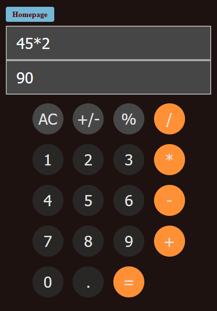
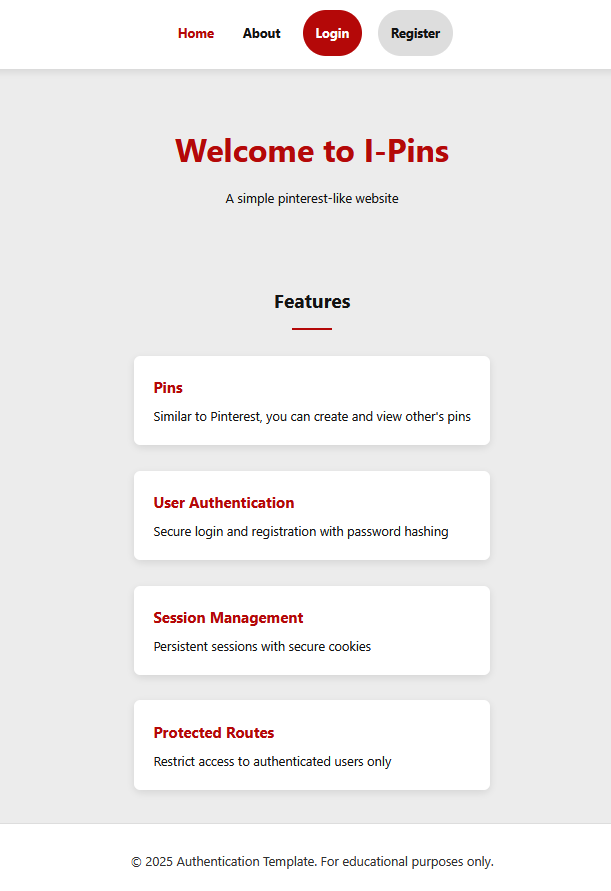

John Tatlonghari
About Me
Hi, I'm John Tatlonghari (TAT-LONG-HARI), a junior Computer Science major at San Francisco State
University. I mainly do programming in Java.
Right now, my career goal is to get an internship to gain relevant experience. I do not have an idea
of what area to specialize in yet but I have considered AI, Data, and UI/UX Design.
From San Carlos, CA

Education
- San Francisco State (2025 - Present)
- Major: Computer Science
- Expected Graduation: 2027
- College of San Mateo (2020-2024)
- Associates Degree in Computer & Information Science
- In Dean's List for three semesters
Experience
| Position | Company | Dates |
|---|---|---|
| Barista | Barnes & Noble | July 2023 - December 2024 |
| Student Assistant | College of San Mateo (Learning Center) | August 2022 - May 2023 |
Skills
Java
C++
HTML
CSS
JS
Basic Express.js
Projects
JavaScript Calculator
Calculator A basic calculator implemented using HTML, CSS, and basic JavaScript. Using the iOS calculator as a reference, it has all the basic features such as modulo and negation.
Pinterest Clone (I-Pins)
I-Pins Group Project A collaboration between 4 students to create a pinterest clone. Only core features are implemented and some features might be simplified. CSS, JS, and Express framework are used.